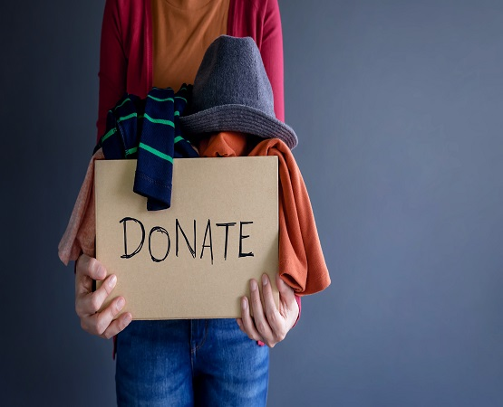
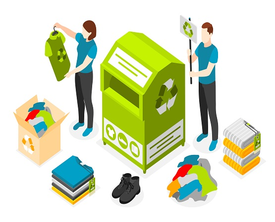
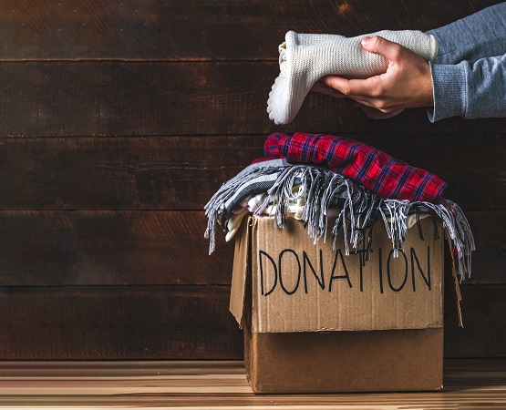
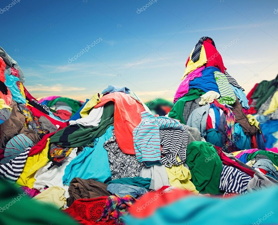
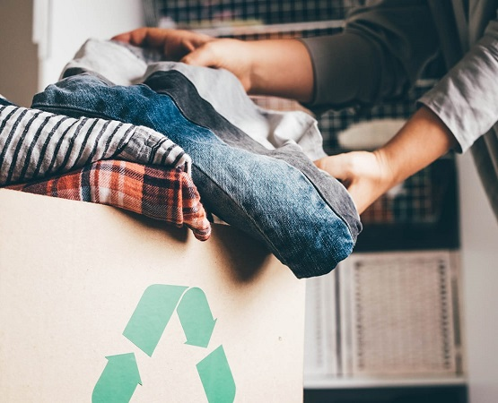
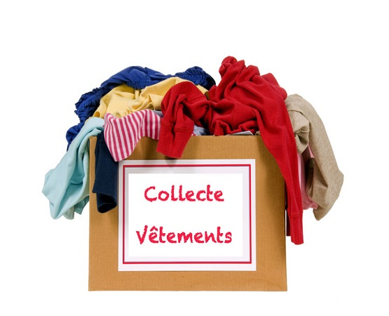

Biographie
La fondation Jaures prend naissance a
Brest plus precisement en France en 1986
Par Le developper BIVEGHE Laurent Jaures
nee a LosAngeles.
qui ne sert plus ou qui ne te
vas plus ,pourquoi pas faire don de cela a une personne
qui en aura besoin.
Cest avec cette pensee que laurent jaures decide de lance sa fondation
.Il decida de contacter des particuliers en leurs rachetant certains vetement
qu'il portent mais
deux fois moins cheres , et apres les offrires a des personnes
qui sont dans le besoins.precisement
Apres ses etudes ils decident d'ouvrrir sa fondation
pour venir en aide aux personnes demunies qui ont du mal a se vetir.
l'objectif de sa fondation est d accompagnees des personnes demunies
ont les soutenants et en apportant une petite contributon .
laurent jaures
s'est rendus compte que beaucoup de personnes
gaspillent enorment d'habit
dans le monde.Au lieu de jetter un vetement
Il decide de partir faire un empreint a la banque et,il
commenca sa fondadtion dans un entrepot
n'ayant pas assez de moyens.
En 2002 il decider de collaborer avec d'autre personnes et ensemeble
decide de donner
forme a se projet.Rappelons juste que l'association n'a pas
encore les ete valider par l'etat francaise
mais l'association commence deja
a partager quelque vetement par ci par la au personnes qui
sont dans le besoin.
- Information
- Pays: Etat-Unis
- Ville:los Angeles
- Adresse: 12 Street californie
- Code postale:52369
- Email: Bapeluxe@gmailcom
- Tel:07-25-84-75-26